2010-04-04 Rawalpindi → Kabul
～病在喀布爾～
Rawalpindi 有種小型的車，旅遊書稱之為 Suzuki，就是日本鈴木出產的車，但其實很多車也是 Suzuki 牌子。而那些特別的小車，和 Peshawar 的 trucks 一樣，裝置得很美觀，這些車有特定路線，車費很便宜，Rs 10-20，但一部車只能容納六人的空間，可以坐八人或更多，若沒位，乘客還可以攀附在車外的一些小型鐵梯。
早上，在另一間地道食店吃早餐，這間店比昨晚的店冷清得多，除了我，只得一位客人坐著，起初我還以為他是食店老闆，他走過來搭訕，問我是不是學生，我一時 間竟然說謊回答是，結果他走時幫我付早餐錢，我感到我一定會有報應。
坐 Suzuki 去機場，只收我 Rs 12，不用半小時。在 Peshawar 買機票時，店員說我要起飛前三小時到機場，不知道是不是有什麼特別的原因，乖乖的很早便去到機場。結果是，安檢十分快，Kam Air 的櫃台還未有人，等到有人 check in，過關又超快，去到候機室，航班還要延遲，在這裏，等了三小時。
Kam Air 由 Islamabad 去 Kabul，用小型飛機，用縲旋槳。以為很有趣，想不到，我會裁在這飛機上。這架小型縲旋槳飛機，引擎聲大到不行，那個低頻的隆隆聲，很難頂。飛機不能攀 上某個高度，可以清楚看見下面的地貌，看見 Hindu Kush（興都庫什山脈），十分雀躍，一個一個山頭，遠處像有無數個雪山，沒有盡頭。
眼底下的景色太迷人，引擎聲已經不當一回事，只顧著看、拍照，看、拍照。直到身體不適時才發覺，過去大半小時，飛機都搖擺不定，目光轉回機艙，太陽的強光 令我暈眩，不止這樣，不知道是機艙氣壓問題還是什麼，身體開始不妥，呼吸開始困難，手腳開始麻痺，更慘是，機艙內很冷，我抱著行李，縮在一旁。
機長說話，快就到達 Kabul，只要捱到降落便行的了，但是，肚子也很不妥，要去廁所，天啊，做乜而家至搞啲咁嘅嘢。
所以，我在阿富汗去的第一個廁所，是在 Kam Air 上，而且是正在降落時去的，真是有型到爆。飛機停了，小型飛機的廁所是在尾部的出入口的，我一出來，便被全機站著等下機的乘客看著，真是救命。
身體暫時還可以，但已經有點虛弱，幸好過關順利，但糊裡糊塗的，一出機場就上了部機場的士，司機給我看價目表，到 Kabul 市中心要 USD 20。Prince 和 Hussain 說過只需要 200 Afg（Afghani）。
這時除了糊塗，還不懂得計數，不知何解覺得 USD 20 不是貴很多（這時 1 USD = 50 Afg，貴了 800 Afg !!!），坐了這部尊貴的機場的士。
其實，阿富汗機場外有三個區，普通的士只能留在最外的區，所以，為什麼一出機場一架的士也看不到，因為還未真正出到去呢，但第一次鬼知咩。
機場的士司機還要不懂路，兜了幾次才找到 Salsal Guest House。
由機場駛去市中心，沿路看見很多大的建築，司機說那些是各國的大使館，這些大使館旁的路，都有很多 check points 和路障。看見遠的地方，零零星星有些破爛的建築物，這些景象，似乎是遊客心中期望看見的，如我自己，只有世上各地新聞媒體傳播的訊息：阿富汗被炸到爛 晒，周圍不是方方的黃泥屋，就是得番棚骨的建築物。
事實是，如某次上網無意看到一個網站所說，就算是什麼地方，在什麼情況下，那裏的人都要生活下去的。Taliban 政權倒下都八年了，雖然現在南面地區還未安全，但是，這個國家是不斷重建中，所以，當的士越來越近市中心，根本，Kabul 和其他城市一樣，人們每天為口奔馳，有食店，有旅館，有商店，有車，有手電，有電腦。Kabul 還要沒有停電的問題呢。
Salsal Guest House 沒房了，但卻在附近給我遇上一間旅遊書沒有提及，但卻很好的旅館，叫做 Baharastan Aria Guest House。Double Room 20 USD 一晚，超大間 Shared Bathroom 以及有熱水花灑還要是水力好充足，之後更發覺包早餐，每天下午更供應茶點，熱水一壺。職員十分友善有些更懂得英文。上天對我不錯，這時候給我遇上這間旅 館。
越來越不舒服，發冷，只在附近逛街，Chicken Street，Flower Street，天陰陰，和心情一樣，街上的店不是很多，也不熱鬧，Chicken Street 是出名的地方，阿富汗特產如礦石製品和 Carpets 都有得賣，但不知是不是晚了，沒有什麼店有開門。
反而周圍多了電器店，以及很多的老翻 DVD 和 CD 店，又有不少電腦遊戲和軟件店，正版 Windows 7 有售。
這時我想念的是我們的白粥，我很需要喝點熱的東西，但這裏只有茶和咖啡，連熱朱古力奶也沒有。回到旅館的餐廳，叫了飯和湯，可是阿富汗的湯都有油，味道也 很特別，以我現在這種狀態，喝多一口也會作嘔，飯本來好一點，但混了羊肉，我不是很喜歡羊味，也吃不下，但叫了全部不吃，覺得不好意思，結果打包回房。
這晚很難受，累，發冷，作嘔又嘔不出（可能沒東西嘔）。不幸中的大幸，有個好的熱水澡，如常地，病了，喝很多很多的水，去很多很多的廁所。
～病在喀布爾～
Rawalpindi 有種小型的車，旅遊書稱之為 Suzuki，就是日本鈴木出產的車，但其實很多車也是 Suzuki 牌子。而那些特別的小車，和 Peshawar 的 trucks 一樣，裝置得很美觀，這些車有特定路線，車費很便宜，Rs 10-20，但一部車只能容納六人的空間，可以坐八人或更多，若沒位，乘客還可以攀附在車外的一些小型鐵梯。
早上，在另一間地道食店吃早餐，這間店比昨晚的店冷清得多，除了我，只得一位客人坐著，起初我還以為他是食店老闆，他走過來搭訕，問我是不是學生，我一時 間竟然說謊回答是，結果他走時幫我付早餐錢，我感到我一定會有報應。
坐 Suzuki 去機場，只收我 Rs 12，不用半小時。在 Peshawar 買機票時，店員說我要起飛前三小時到機場，不知道是不是有什麼特別的原因，乖乖的很早便去到機場。結果是，安檢十分快，Kam Air 的櫃台還未有人，等到有人 check in，過關又超快，去到候機室，航班還要延遲，在這裏，等了三小時。
Kam Air 由 Islamabad 去 Kabul，用小型飛機，用縲旋槳。以為很有趣，想不到，我會裁在這飛機上。這架小型縲旋槳飛機，引擎聲大到不行，那個低頻的隆隆聲，很難頂。飛機不能攀 上某個高度，可以清楚看見下面的地貌，看見 Hindu Kush（興都庫什山脈），十分雀躍，一個一個山頭，遠處像有無數個雪山，沒有盡頭。
眼底下的景色太迷人，引擎聲已經不當一回事，只顧著看、拍照，看、拍照。直到身體不適時才發覺，過去大半小時，飛機都搖擺不定，目光轉回機艙，太陽的強光 令我暈眩，不止這樣，不知道是機艙氣壓問題還是什麼，身體開始不妥，呼吸開始困難，手腳開始麻痺，更慘是，機艙內很冷，我抱著行李，縮在一旁。
機長說話，快就到達 Kabul，只要捱到降落便行的了，但是，肚子也很不妥，要去廁所，天啊，做乜而家至搞啲咁嘅嘢。
所以，我在阿富汗去的第一個廁所，是在 Kam Air 上，而且是正在降落時去的，真是有型到爆。飛機停了，小型飛機的廁所是在尾部的出入口的，我一出來，便被全機站著等下機的乘客看著，真是救命。
身體暫時還可以，但已經有點虛弱，幸好過關順利，但糊裡糊塗的，一出機場就上了部機場的士，司機給我看價目表，到 Kabul 市中心要 USD 20。Prince 和 Hussain 說過只需要 200 Afg（Afghani）。
這時除了糊塗，還不懂得計數，不知何解覺得 USD 20 不是貴很多（這時 1 USD = 50 Afg，貴了 800 Afg !!!），坐了這部尊貴的機場的士。
其實，阿富汗機場外有三個區，普通的士只能留在最外的區，所以，為什麼一出機場一架的士也看不到，因為還未真正出到去呢，但第一次鬼知咩。
機場的士司機還要不懂路，兜了幾次才找到 Salsal Guest House。
由機場駛去市中心，沿路看見很多大的建築，司機說那些是各國的大使館，這些大使館旁的路，都有很多 check points 和路障。看見遠的地方，零零星星有些破爛的建築物，這些景象，似乎是遊客心中期望看見的，如我自己，只有世上各地新聞媒體傳播的訊息：阿富汗被炸到爛 晒，周圍不是方方的黃泥屋，就是得番棚骨的建築物。
事實是，如某次上網無意看到一個網站所說，就算是什麼地方，在什麼情況下，那裏的人都要生活下去的。Taliban 政權倒下都八年了，雖然現在南面地區還未安全，但是，這個國家是不斷重建中，所以，當的士越來越近市中心，根本，Kabul 和其他城市一樣，人們每天為口奔馳，有食店，有旅館，有商店，有車，有手電，有電腦。Kabul 還要沒有停電的問題呢。
Salsal Guest House 沒房了，但卻在附近給我遇上一間旅遊書沒有提及，但卻很好的旅館，叫做 Baharastan Aria Guest House。Double Room 20 USD 一晚，超大間 Shared Bathroom 以及有熱水花灑還要是水力好充足，之後更發覺包早餐，每天下午更供應茶點，熱水一壺。職員十分友善有些更懂得英文。上天對我不錯，這時候給我遇上這間旅 館。
越來越不舒服，發冷，只在附近逛街，Chicken Street，Flower Street，天陰陰，和心情一樣，街上的店不是很多，也不熱鬧，Chicken Street 是出名的地方，阿富汗特產如礦石製品和 Carpets 都有得賣，但不知是不是晚了，沒有什麼店有開門。
反而周圍多了電器店，以及很多的老翻 DVD 和 CD 店，又有不少電腦遊戲和軟件店，正版 Windows 7 有售。
這時我想念的是我們的白粥，我很需要喝點熱的東西，但這裏只有茶和咖啡，連熱朱古力奶也沒有。回到旅館的餐廳，叫了飯和湯，可是阿富汗的湯都有油，味道也 很特別，以我現在這種狀態，喝多一口也會作嘔，飯本來好一點，但混了羊肉，我不是很喜歡羊味，也吃不下，但叫了全部不吃，覺得不好意思，結果打包回房。
這晚很難受，累，發冷，作嘔又嘔不出（可能沒東西嘔）。不幸中的大幸，有個好的熱水澡，如常地，病了，喝很多很多的水，去很多很多的廁所。
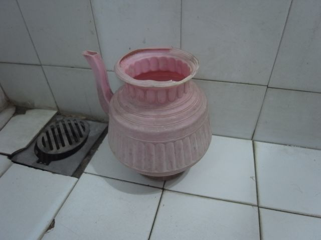
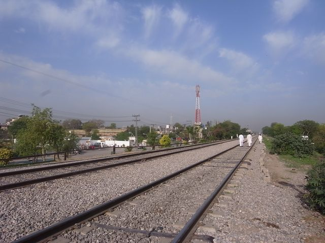
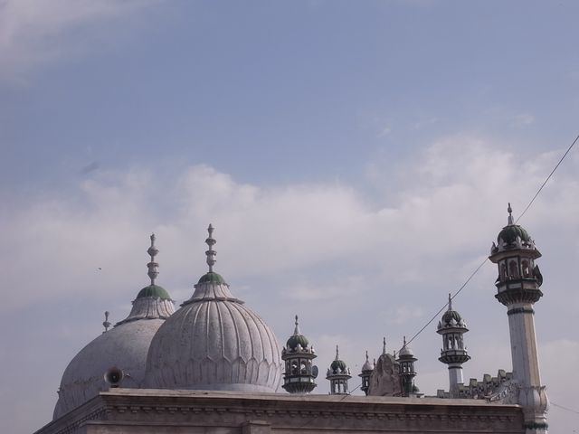
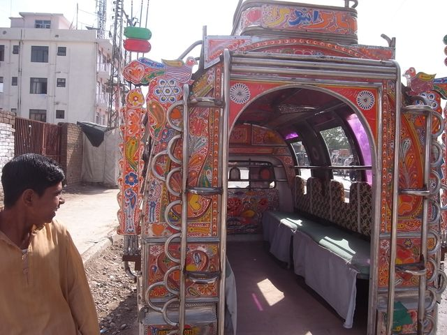
Suzuki
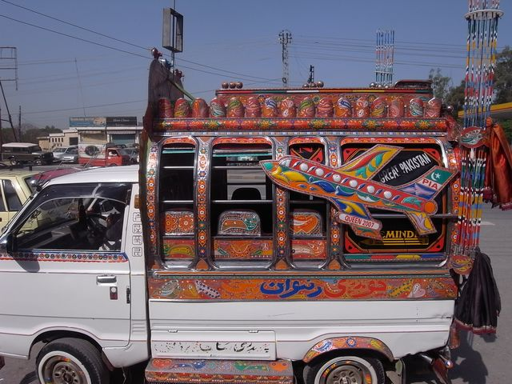
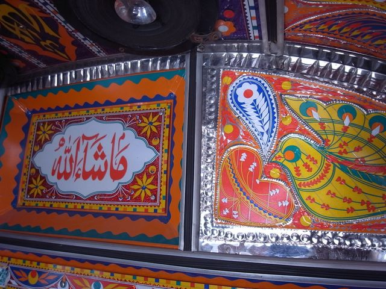
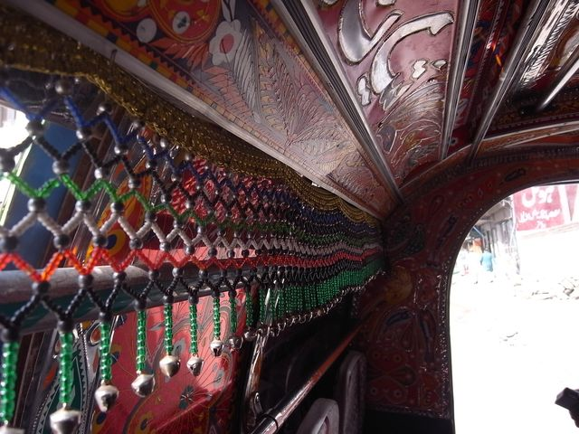
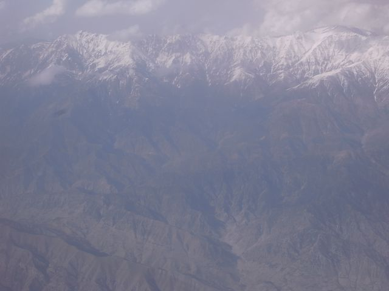
Hindu Kush
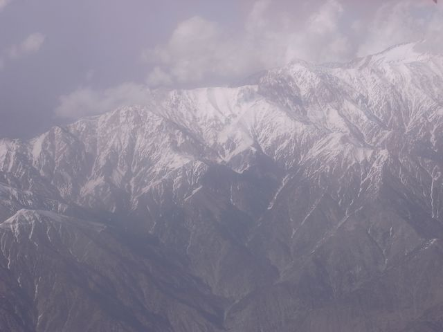
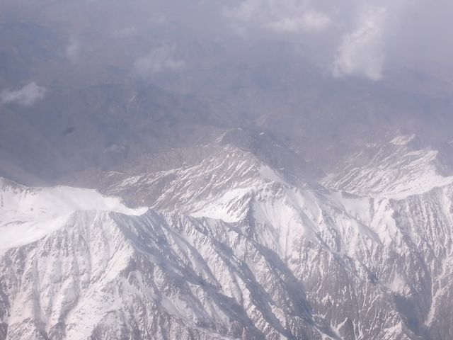
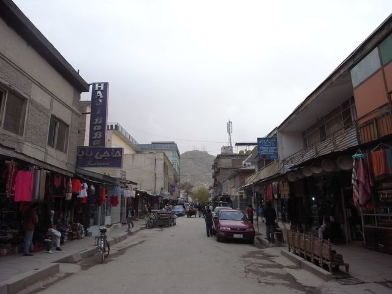
Chicken Street 冇 chicken
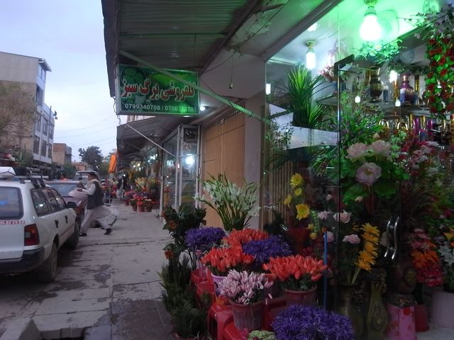
Flower Street 有 flower
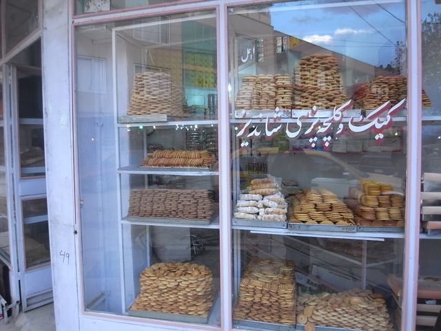
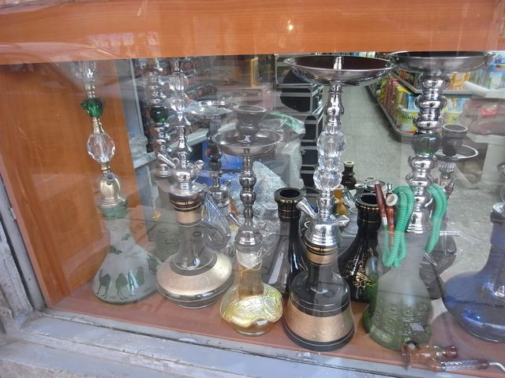
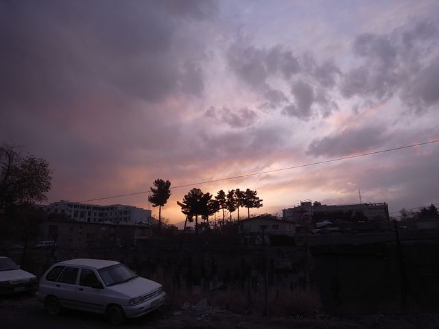
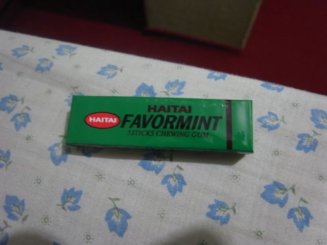
街上小孩賣的香口膠